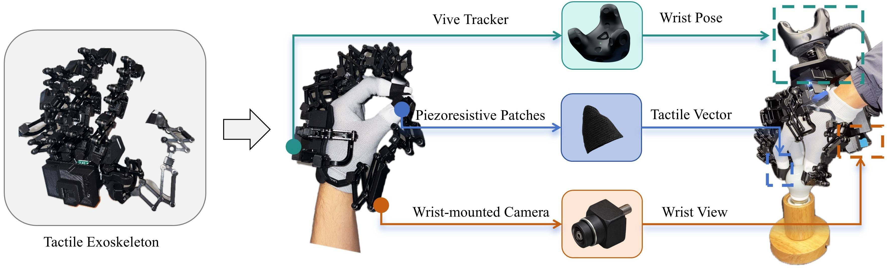
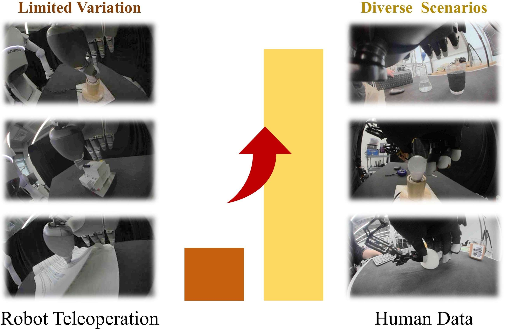
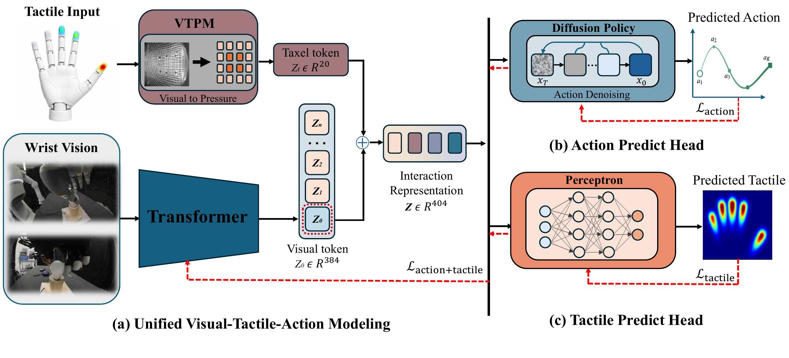
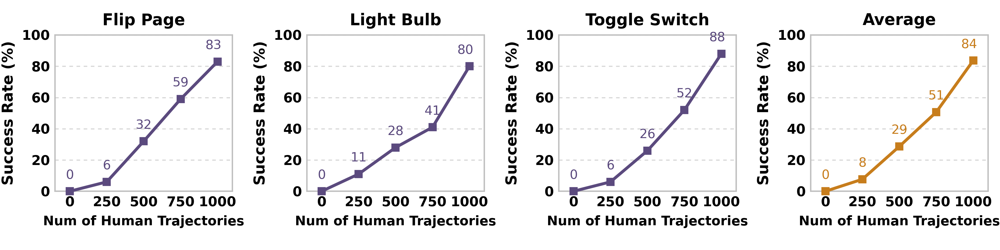

Capture
Record wrist-centric vision, fingertip pressure, and hand motion without placing a robot in the collection loop.
Dexterous manipulation from scalable human touch
Hands can change. The physics of interaction does not.
Motivation
Tactile feedback is essential for contact-rich dexterity, yet robot tactile demonstrations are expensive to collect at scale. UVTA uses wearable human tactile motion capture to gather diverse physical interactions, then learns a shared representation that connects human contact experience to robot action.
Record wrist-centric vision, fingertip pressure, and hand motion without placing a robot in the collection loop.
Map human and robot trajectories into common tactile and action spaces across different hand embodiments.
Jointly predict future actions and tactile trajectories so human touch supervises contact-aware representation learning.
System & dataset
Our wearable system synchronizes a passive 22-DoF hand exoskeleton, fingertip force-sensing resistors, a VIVE tracker, and wrist-mounted RGB vision.


UVTA dataset
Each task combines 1,000 diverse human demonstrations with 150 robot demonstrations. Human interactions expand contact diversity, while robot trajectories ground the learned policy in the target embodiment.
Method
UVTA fuses a 384-D visual token with a 20-D tactile token and supervises the shared representation through both action diffusion and future-tactile prediction.

Early fusion connects wrist vision with contact measurements before downstream prediction.
Generates a 16-step chunk of relative wrist and absolute finger-joint actions.
Predicts the complete future tactile trajectory and shapes the shared encoder with physical consequences.
Real-robot demos
Each clip shows autonomous policy execution from the agent view. Videos play automatically when they enter the viewport.
Rub, separate, and turn a single page.
Coordinate wrist rotation and fingertip contact.
Stabilize the breaker and actuate the switch.
Distinguish visually similar materials through touch.
Draw, move, and dispense liquid with a dropper.
Numbers denote the stage-wise task score (%) reported in the paper.
Results
UVTA outperforms the strongest visual-tactile baseline by 41 points on average, while future-tactile prediction contributes a 28-point gain over its ablation.
| Method | Flip | Bulb | Switch | Ball | Liquid | Avg. |
|---|---|---|---|---|---|---|
| ViTacFormer | 0 | 4 | 0 | 0 | 0 | 1 |
| RDP | 10 | 20 | 20 | 18 | 0 | 14 |
| T-Rex | 43 | 26 | 24 | 36 | 15 | 29 |
| UVTA | 83 | 80 | 88 | 56 | 44 | 70 |

Citation
The paper is currently under review. We will add the official paper link and BibTeX entry here when a public version is available.